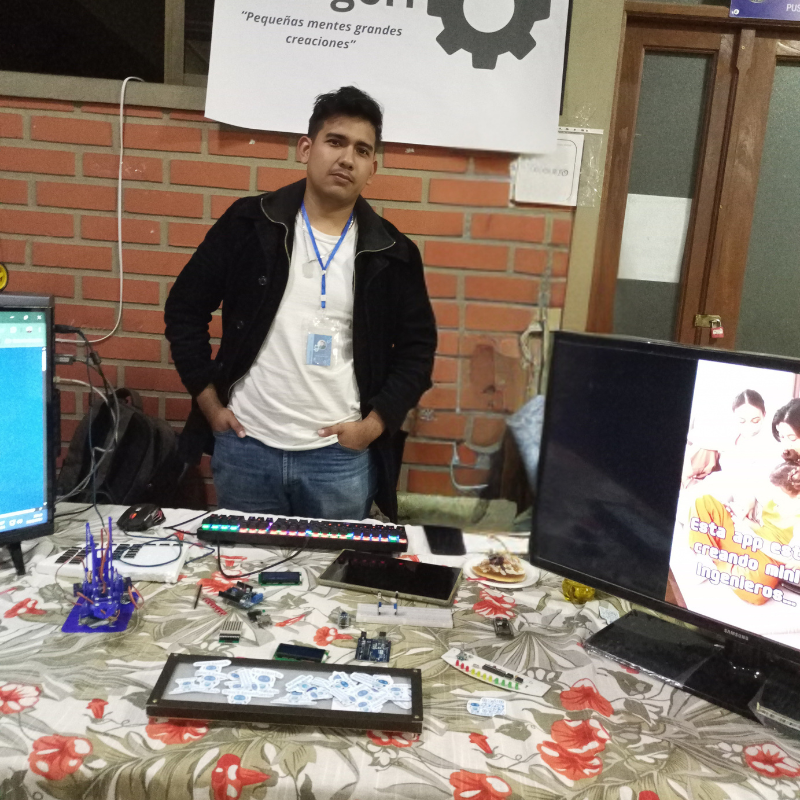
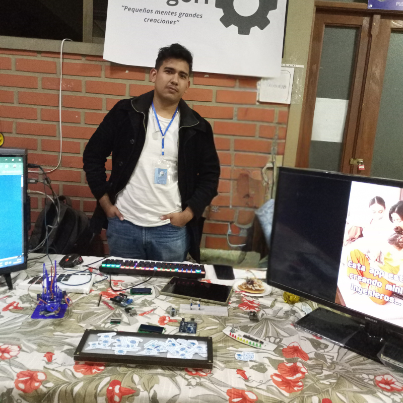

📋 Información del Emprendimiento
Tipo: Aplicación Educativa
Enfoque: Educación Tecnológica
Público Objetivo: Estudiantes y entusiastas de la robótica
Ubicación en FEXPO: Stand de Tecnología
📸 Fotografías del Stand

 

🎥 Video Explicativo del Emprendimiento
Video donde los emprendedores explican su proyecto, funcionalidades y objetivos
💭 Mis Impresiones
Este emprendimiento me llamó mucho la atención por su enfoque educativo innovador. La aplicación Geargori combina tecnología y educación de una manera muy creativa, permitiendo que los estudiantes aprendan robótica de forma interactiva.
Lo que más me impresionó fue la interfaz intuitiva y la forma en que logran simplificar conceptos complejos de electrónica para hacerlos accesibles a diferentes niveles de conocimiento.